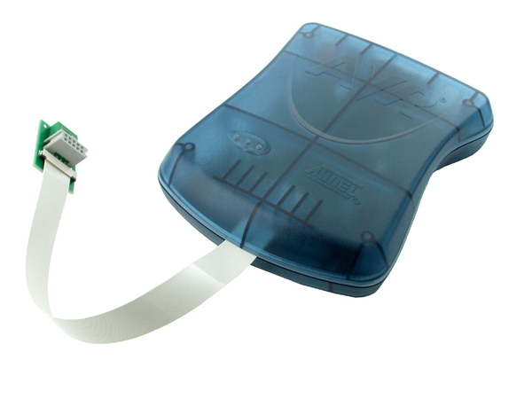

CPRE 288 Laboratory
Lab 1: Introduction to the AVR Studio 5 and VORTEX Platform
Lecture - Lab Connection
In lecture, we are starting with an overview of microcontrollers and embedded systems. In this lab, we are starting with an overview of the platform being used in the lab for investigating microcontrollers and embedded systems. The educational environment includes the AVR Studio 5, an integrated development environment (IDE) provided by Atmel, and the VORTEX platform consisting in part of a Cerebot II microcontroller board designed by Digilent and an iRobot Create mobile sensor platform. Lecture begins with a review of the C programming language, and we will also start using C immediately in the labs. Self-study based on your own needs through your laboratory experiences will be an important complement to the lectures.
The VORTEX platform is the CprE Department's code name for the iRobot Create platform, the Cerebot II add-on, and various additional accessories (LCD board, sonar/servo, stepper motor, bluetooth dongle, etc).
Prelab
- Read carefully the lab policies on the course website.
- Read through the lab description, including the linked documents.
- Print the Lab Evaluation Form.
Reference Files
Download the following files to a single folder on your U: drive. (Right-click and select 'Save Target As')
- helloworld.c: The main program for printing "Hello, World" on the board's LCD screen
- lcd.c: A program file with a number of LCD functions
- lcd.h: The header file for lcd.c
- util.c: A program file that supports lcd.c
- util.h: The header file for util.c
Part I. "Hello, world"
In this part, you will build a program executable from files provided to you.
Create a project and build
Note: Before starting AVR Studio, make sure the blue JTAGICE mkII box is connected to the computer via USB and is powered on. AVR Studio recognizes the JTAGICE mkII during startup.
Start AVR Studio. Select File -> New -> Project (or Ctrl+Shift+N). You will see the following dialogue:
Make sure you select "AVR GCC" -> "C Executable Project" as the template. The checkbox "Create directory for Solution" is checked by default.
WARNING: Make sure your project is saved to a directory that is not a UNC path (AVR does not accept UNC paths like \\ComputerName\SharedFolder\MyProject).
You may use "helloworld" as the project name and then the default initial file is "helloworld.c". Other project names can be used, but then you need to keep in mind that the initial file name will not be "helloworld.c".
Click on "OK".
Now you will select your platform from the many Atmel processors from the following screen:
Choose "ATmega128". The ATmega128 is the microcontroller on our version of the Cerebot II controller board.
Click on "OK".
Next, delete the default template file named helloworld.c (this file is empty and has the same name as your newly created project). Delete it by right-clicking on "helloworld.c" in the Solution Explorer window, then select delete.
Now add files into the project. Right-click in the Solution Explorer on the right side of AVR Studio. Click on Add -> "Existing item..." You will see a dialogue window, select "lcd.c", "lcd.h", "util.c", "util.h", and "helloworld.c". Then click "Add".
Build the binary image by using the menu or the shortcut key F7. You should see this message at the end: "Build succeeded." Your source code has just been compiled into a binary program named "helloworld.hex" in your project's "debug" folder.
Load the Binary Image on to the ATmega128 processor
We will be using a device called the JTAGICE mkII (figure below) to provide both programming and on-chip debugging capabilities. The JTAGICE mkII is managed from within AVR Studio.
Attach the cable connected to the mkII to the JTAG header on the red Cerebot II board. Since both the cable and connector are keyed there should only be one orientation for which they fit together. On the back side of the mkII is a USB connector and a power switch. As you would expect, the power needs to be turned on the mkII in order for it to be functional. You will see lights lit on the topside when it is powered. When the mkII is oriented as shown in the picture, the left most light will be green when the mkII is properly attached to the Cerebot II board and both are turned on. For more details on the status LEDs take a look at the JTAGICE mkII's hardware description.
Note: Always leave the JTAGICE mkII powered on and connected to the computer. It must be connected when you start AVR Studio, otherwise, AVR Studio will not recognize it properly. If you switch JTAGICE mkII boxes because yours is broken, you must restart AVR Studio.
To load your program, select the "Debug" file menu and click "Start Without debugging." The LCD should now saw "Hello World."
If you have completed this section of the lab within the first 30 minutes of lab, move on to Part 2. The parts of the lab are cummulative, and demoing the last part to the TA is sufficient for receiving all points. If you think you will fail to complete the entire lab within the lab period, you may demo this part to your TA for partial credit and demo the remaining parts at the beginning of your next lab session.
Part 2. Simulated Execution
In this section, you will explore the simulation feature of AVR Studio. Simulating runs your program using a software simulator of the ATmega128 processor. Simulated execution has many advantages: You can run the program without the controller board, so in the future labs you can test run your program on your home computers (you can download AVR Studio for free). More importantly, you can do debugging with simulation.
Simulation does have a shortcoming: It only simulates the microcontroller. The JTAGICE mkII is capable of allowing one see how the program is operating in the physical environment on the actual processor. JTAGICE mkII debugging will be explored in a future lab. You will not see the contents of the LCD screen, push button actions, LED status and other devices on the microcontroller board.
In the AVR studio, right-click on your project "helloworld" in the Solution Explorer and select "Properties", and then select "Tool." Choose AVR Simulator as the selected debugger.
Click the "Debug" file menu and then click "Start Debugging". Press F10 to step over each statement until you reach statement "lprintf" function. Press F11 to step in this function.
Move on to Part III, or explain how to debug to the TA for partial credit.
Part 3. Rotating Banner
In this section, you will write a program to show a rotating banner on the LCD screen. Every 300 milliseconds, the text "Microcontrollers are lots of fun!" should move one position to the left. This banner should repeat indefinitely. Edit your helloworld project, as it provides a good starting point.
Here are the requirements of the output:
- Only the first line of the LCD screen should be used. The LCD screen has 4 lines. The second line should be blank all the time.
- At the beginning, the first letter 'M' appears on the right side of Line 1. The following characters appear one by one every 0.3 second.
- After the 20th letter appears, new characters appear one by one every 0.3 second and push the old letters off the LCD screen.
- After the last character '!' appears on the right, the message continues shifting to the left. Every 300 milliseconds the leftmost letter is pushed out until the screen is completely cleared.
- After the screen is cleared for 0.3 second, repeat the whole procedure again. The banner should repeat forever until the board is turned off.
- You need to write your program so that the message can be changed quickly. The TA will ask you to display a new message during the demo. You should only need to make a minor change to your program and compile.
- wait_ms(unsigned int n): Delay the program execution for n milliseconds.
- lcd_init(): Initializes the IO ports to communicate with the LCD controller; clears the screen.
- lprintf(const char *fmt, ...): Clears the screen and displays text. See documentation on printf.
Demo your program to your TA.
Cautions
Never leave a powered-down JTAGICE mkII connected to a powered robot - current may leak from the unit and result in damage to the emulator. Try to leave the blue JTAGICE mkII box powered on at all times.
Turn the power to the Cerebot board and iRobot off before charging. The Cerebot board consumes power and the battery will not charge if the robot is in full_mode (which it enters after calling oi_init, turing the power LED yellow). The robot is charging when the robot's power LED is pulsing red and both green LEDS on the dock are lit.
Reference Files
| Files | Description |
|---|---|
| LCD Controller Datasheet | Information about the LCD controller connected to PORTA |
| Documentation on printf | Documentation for the lprintf and printf function. |
| Lab Evaluation Form | Evaluation form for Lab |
| Online Feedback Form | Tell us what you think of the lab (feedback forms) |